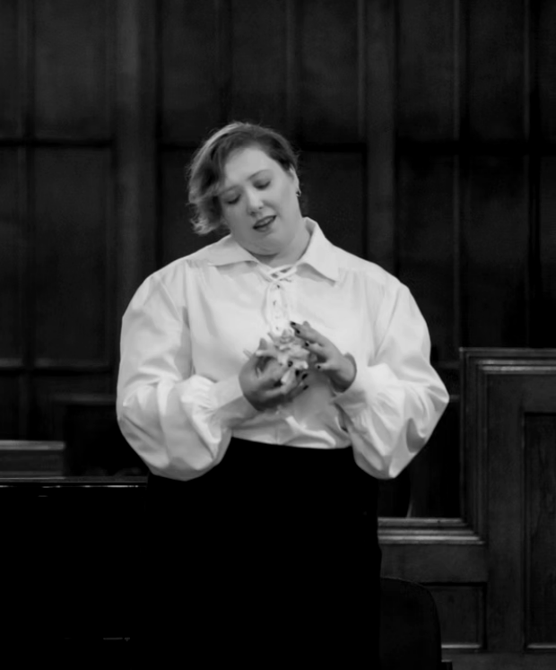

Bill is a gender-inclusive, queer opera written for soprano Émilie Versailles.
Bill was written for the 2025 Opera from Scratch workshop in Halifax Nova Scotia. It was premiered by soprano Émilie Versailles and pianist Indra Egan. I gave the following introduction at its premiere. 'Bill was a victim of the sinking of the S.S. Atlantic in 1873. This was a cruise liner which capsized near Lower Prospect while it was enroute to Halifax. What interested me about Bill was this was a person who seemed to be very different in death than they were in life. After this tragedy they were discovered to be a woman but in life they were a very convincing man. They were a sailor aboard the S.S. Atlantic. And there’s not really enough information about Bill to say whether or not they were trans. But certainly, they were not a cisgender man, which is how they were known on the ship. The scene I’m depicting is actually the last moments of Bill’s life as the ship is sinking'.
There have been many romantic incidents attending this calamity which have come to light during the search for the bodies. One, was the discovery of a girl in sailor’s garb, whose life was sacrificed in efforts to save others. She was about twenty or twenty-five years old, had served as a common sailor for three voyages, and her sex was never known until the body was washed ashore and prepared for burial. She is described as having been a great favorite with all her shipmates, and one of the crew, speaking of her, remarked: ‘I didn't know Bill was a woman. He used to take his grog as regular as any of us, and was always begging or stealing tobacco. He was a good fellow, though, and I am sorry he was a woman.”’ It is said that the poor thing was an American, and, among the crew, perhaps the only one of that nationality. Who she was and whence she came nobody knew. -Frank Leslie’s Illustrated Newspaper Vol.36 Iss.917
08.17.25 . 3pm ADT . Opera From Scratch Workshop: Gala Performance . St. Andrew's Church, 6036 Coburg Road, Halifax NS . CA
Émilie Versailles, Soprano, ,Indra Egan, Piano
2025 Opera From Scratch Workshop - Manitoba Arts Council, Travel Grant
2025 Opera From Scratch Workshop - Winnipeg Arts Council, Travel/PD Grant